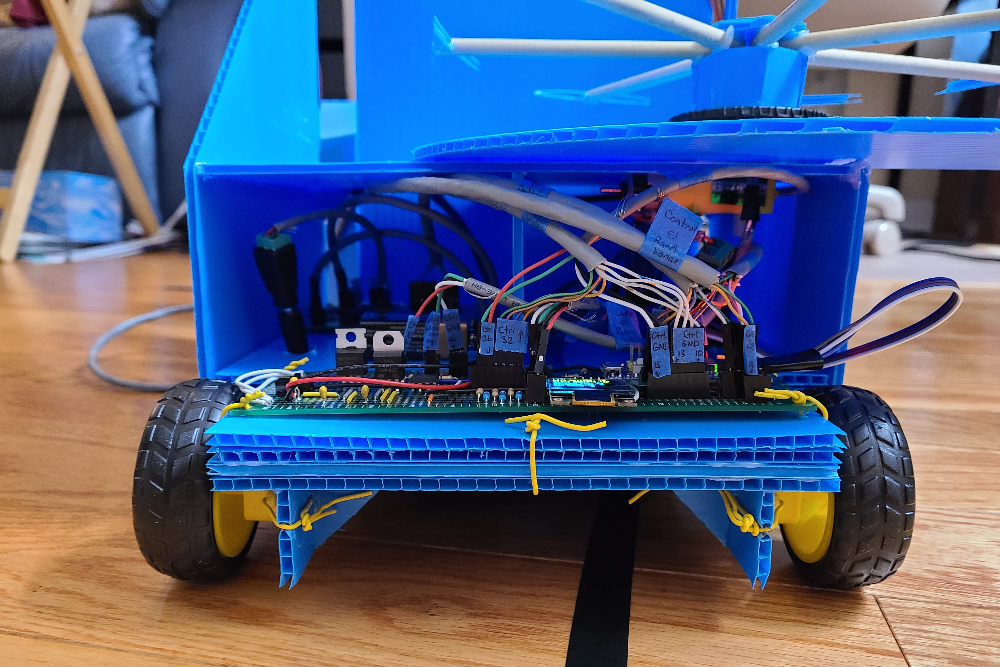
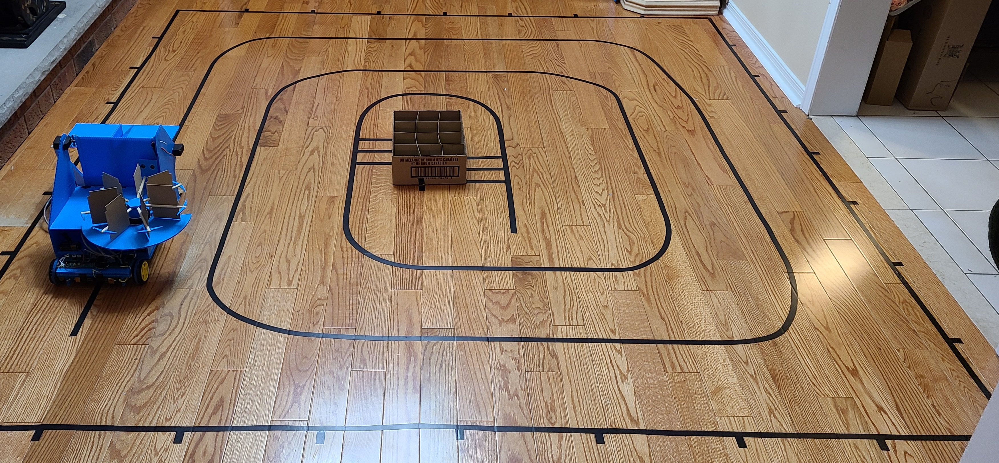
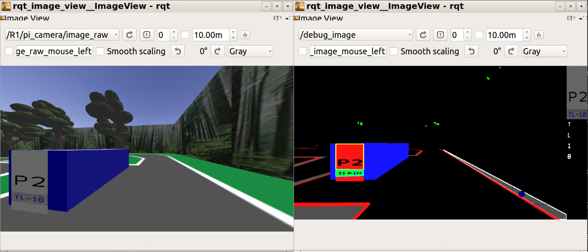

I am passionate about electrical, software, and mechatronics engineering, with an interest in embedded systems. With experience working with microcontrollers in Arduino and programming in Python, TypeScript, and C, I love to apply my skills to interesting and impactful projects and always look for opportunities to learn something new.
Things I've worked with
Altium
SolidWorks
Arduino
Python
TypeScript/JavaScript
Java
ROS
Jupyter/NumPy/SciPy
MATLAB
Projects
Autonomous Can Collecting Robot - The Revolver
As part of a design course, I designed an autonomous robot to pick up and drop off soda cans in a team of 4. The robot operates by scooping the can into a bucket mounted to the front of the robot using a motorized arm, then flipping the bucket up and emptying the can into the next empty spot in the revolving storage area. The storage area hangs over the side of the robot so that cans can fall directly from the storage area to the drop-off bin once the robot reaches the centre of the track.
I designed the three circuit boards on the robot using EasyEDA. The main purpose of the design was to be modular and easy to test. Each of the sensors and motors on the robot are connected with removable connectors to headers on the board. As we each hand-soldered our own robots, it was important that we had a consistent and testable design so we could all help with troubleshooting. The motor drivers are on separate boards, a separate power supply, and connected to the control boards through optoisolators to reduce the impacts of electrical noise.
I also created an AR demo of the can collection process in Blender to help visualize the robot's mode of operation.


Autonomous Parking Enforcement Competition
I wrote an autonomous robot controller in Python using the ROS framework to drive around a track and record license plates from parked cars in a Gazebo simulation for a course competition. The controller consisted of a single ROS node that processed each frame from the camera in simulation using OpenCV. The controller uses Keras and TensorFlow to perform character recognition on the license plates. Line following was done using PID control using the location of the road markings from OpenCV.
Most of the robot controller code is dedicated to a classical computer vision pipeline that produces consistent input images for the neural network. The controller performs semantic segmentation on the input image using the cv2.inRange() function to create masks containing pixels that match the colour of desired objects in the image. These masks are shown in the right half of the figure below. Contours are then drawn over solid regions of the masks, and license plates are then perspective transformed to a 100x50 pixel image and the mask of the license plate text is sent to the neural network.
The convolutional neural network that processes license plate images was trained on 800 generated images of license plates. In practice, this network is sufficiently reliable that it did not need to be trained on images extracted from the simulation, and no data augmentation was required.

Assembly Debug Adapter
For a microcomputers course, we used a command-line based debugger to step through our assembly code as it ran on our microcontroller board. I wanted to integrate this with Visual Studio Code to be able to see all of the information the debugger provided at a glance in context with the source code. I looked into the Debug Adapter Protocol used by VS Code and realized that most of the features of the protocol were already implemented by the command-line debugger, so I wrote a TypeScript program to receive Debug Adapter Protocol requests, send them to the debugger over the command line, parse the responses and send them back.
The basic structure of the project is a runtime that sends commands and receives responses from the debugger and a debug adapter which calls methods on the runtime whenever VS Code requests information. Each method in the runtime sends a command to the debugger and waits asynchronously for a response, which it parses using a simple RegEx. Each time a method waits for a response, it sends its RegEx to a scheduler, which queues parsers in the order they were called to ensure that each line of output is read in order. I initially ran into concurrency issues where a command that was called later would start reading output before a previous command was finished. Since I used the await keyword to wait for parsers, they were not being queued atomically and it was possible for another command to queue its parser while the first one was still waiting. I fixed this by allowing commands to schedule multiple parsers together so they only had to call await once.
While working on this project, I learned a lot about how applications interact with the terminal. Initially, I tried running the debugger as a subprocess and piping standard input and output into the debug adapter, but the debugger detected that the debug adapter was not a terminal and buffered its output until it finished executing, which made it impossible to read output in real-time. Since I needed to present the debug adapter as a terminal to get the debugger to send output in real-time, I looked into pseudoterminals in Node.js and landed on the node-pty module, which presents the application as a pseudoterminal when it runs a subprocess. I also faced issues getting the debug adapter to run as a VS Code extension since node-pty is a native module and needs to be compiled for the specific version of Node.js used. After plenty of attempts recompiling the individual module for the version of Node.js used in VS Code, I was able to get it to run by reinstalling the entire project for the specific version of Electron used in VS Code.
Since off the shelf video doorbells are very expensive and often require a subscription to use, I tasked myself with building one with an ESP32 camera module that costs less than 25 USD. I found an existing open-source video streaming project with the same hardware and modified it to turn on when motion is detected and automatically shutoff after 30 s of inactivity to save battery. I also added support for displaying messages on the integrated display by sending messages to the device over MQTT.